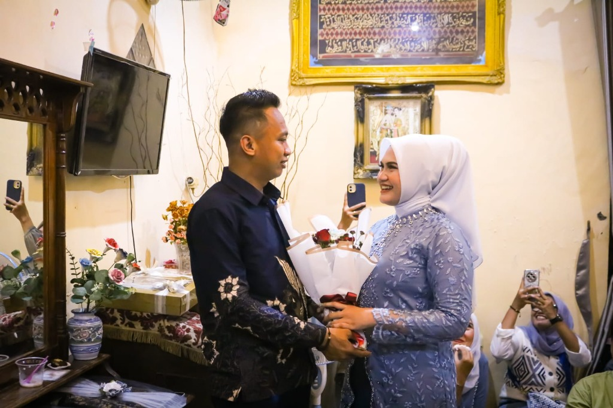
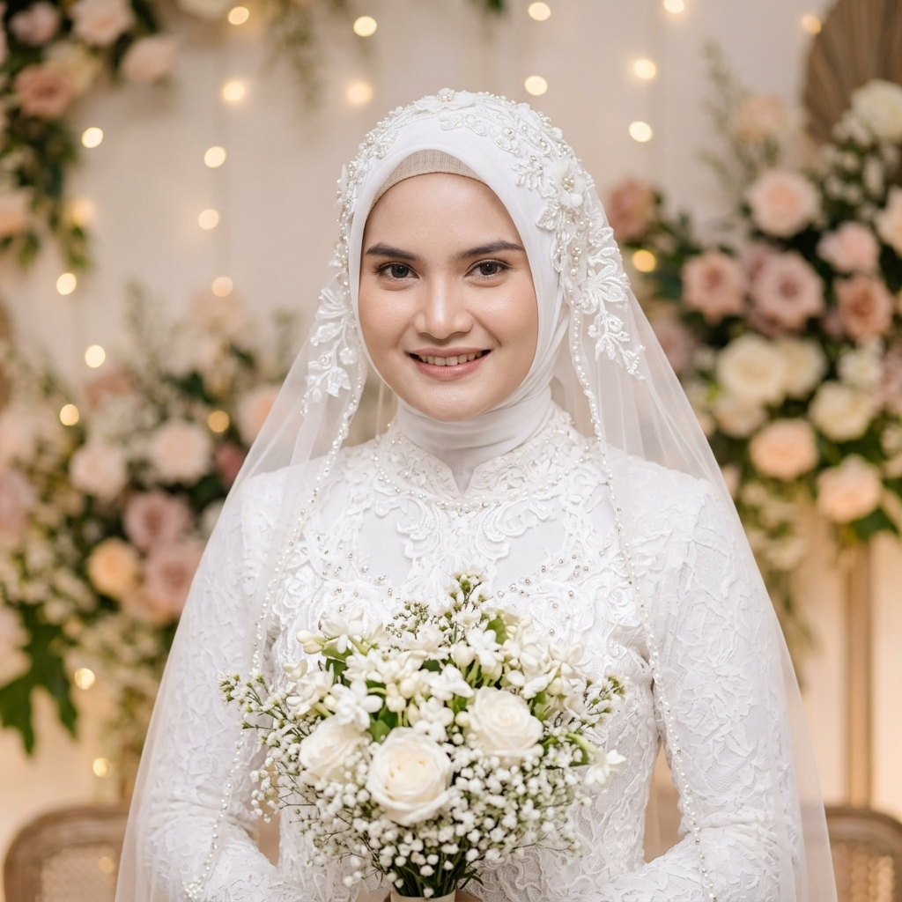

Ngunduh Mantu
Acara Tasyakuran Ngunduh Mantu

Tito Sumarsono
&Andini Melati Putri
Minggu, 11 Oktober 2026 • Surabaya
وَمِنْ آيَاتِهِ أَنْ خَلَقَ لَكُم مِّنْ أَنفُسِكُمْ أَزْوَاجًا لِّتَسْكُنُوا إِلَيْهَا وَجَعَلَ بَيْنَكُم مَّوَدَّةً وَرَحْمَةً ۚ إِنَّ فِي ذَٰلِكَ لَآيَاتٍ لِّقَوْمٍ يَتَفَكَّرُونَ
"Dan di antara tanda-tanda kebesaran-Nya ialah Dia menciptakan pasangan-pasangan untukmu dari jenismu sendiri, agar kamu cenderung dan merasa tenteram kepadanya, dan dijadikan-Nya di antaramu rasa kasih dan sayang. Sungguh, pada yang demikian itu benar-benar terdapat tanda-tanda bagi kaum yang berfikir."
(QS. Ar-Rum: 21)
Mempelai Pengantin
Pasangan Berbahagia
Dengan memohon rahmat dan ridho Allah SWT, kami bermaksud mengundang Bapak/Ibu/Saudara/i untuk menghadiri acara tasyakuran ngunduh mantu putra-putri kami:

Mempelai Wanita
Andini Melati Putri
Putri dari
Bapak Alm. Erwin Normansyah & Ibu Yulia Rachmawati
Waktu & Lokasi
Informasi Ngunduh Mantu
Ngunduh Mantu
Merupakan suatu kehormatan dan kebahagiaan bagi kami atas kehadiran Bapak/Ibu/Saudara/i sekalian untuk menyambung tali silaturahmi & doa restu:
Jl. Rembang No. 25 A, Surabaya, Jawa Timur
📌 Akses dekat Jl. Dupak / Krembangan / Pasar Turi SurabayaDisarankan mengenakan busana bernuansa santun & bersahaja:
Kisah Kasih
Cerita & Kenangan
Awal Perjumpaan
Takdir mempertemukan kami di sebuah kegiatan bakti sosial di Surabaya. Sebuah senyuman sederhana dan perbincangan hangat yang perlahan menjadi awal dari kisah indah kami.
Merajut Komitmen
Setelah saling mengenal karakter, nilai kehidupan, dan mendapatkan restu hangat dari kedua orang tua, kami bersepakat melangkah dalam ikatan yang lebih serius dengan niat ibadah.
Hari Khitbah (Lamaran)
Di hadapan keluarga besar tercinta, Tito resmi meminang Andini. Momen haru dan penuh tawa menjadi saksi kesiapan kami berdua menyatukan dua keluarga besar.
Menuju Janji Suci
Insya Allah, ikatan suci pernikahan kami diresmikan dengan penuh keberkahan dan kebahagiaan bersama seluruh sanak saudara dan handai taulan.
Momen Bahagia
Galeri Foto
Buku Tamu Ngunduh Mantu
Komentar & Doa Restu Tamu
Silakan tinggalkan pesan, doa restu, dan konfirmasi kehadiran Bapak/Ibu/Saudara/i untuk tasyakuran Ngunduh Mantu:
Tanda Kasih
Kado Pernikahan
Doa restu Anda merupakan karunia terindah bagi kami. Namun jika memberi adalah ungkapan kasih Anda, tanda kasih berupa kado fisik dapat dikirimkan ke alamat berikut:
Kirim Kado Fisik
Penerima: Bapak Abdul Karim & Ibu Sumarni / Tito & Andini
Jl. Rembang No. 25 A
Kec. Bubutan, Surabaya, Jawa Timur
"Merupakan suatu kehormatan dan kebahagiaan bagi kami atas kehadiran Bapak/Ibu/Saudara sekalian."
Keluarga Besar Tuan Rumah: Bapak Abdul Karim & Ibu Sumarni